關於打小人
深入探索這項香港非物質文化遺產的歷史與內涵
打小人起源
現今，打小人是一種流傳於廣東、福建、香港等地的傳統民俗，透過特定儀式來象徵性地驅除小人、霉運、負能量，以改善工作運、財運和人際關係。儀式通常由經驗豐富的「打手婆婆」主持，透過焚香、敲打紙人、唸誦口訣等步驟進行，以驅邪轉運！
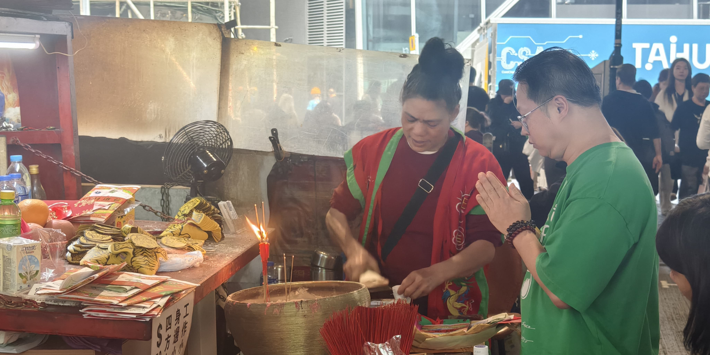
而在古時，帝王身邊總有人為權力鬥爭而挑撥離間、發放謠言和中傷他人，人們把這類人稱之為「小人」。「小人」的定義後來演變成為在人們背後存心搗亂和陰險的人。要避免與躲在陰暗處的「小人」作衝突，但又無法消氣，人們只好私下利用一些傳統儀式和方法化解和發洩自己內心的怨恨。
君子在野，小人在位。
君子小人只是箇正不正。
自盛唐開始，便有「打小人」的習俗，並延續至今。在一般人的眼中，「打小人」也許只是沒有科學根據而又迷信的一種中國傳統儀式。但隨著時代的變遷和社會的進步，有人發展出「網上打小人」，也有人從「打小人」中得到各式各樣的啟發，引發無窮商機。
從今，「打小人」不再只是一種發洩的途徑，它可以演變為一種行為藝術，一種與別不同的設計，一種值得研究並反映人們心理的中國傳統。
「驚蟄」打小人的講究
「驚蟄」是中國每年的二十四個節氣的其中一個，通常在每年公元西曆的三月五日或六日，即中國農曆二月廿一日，進入「驚蟄」這個節令。「驚蟄」，又名「白虎開口日」。按字面的解釋，「蟄」是冬眠，而「驚蟄」則是動物剛剛醒來的時候。
按廣東民間傳說，凶神之一的白虎也於這時覓食。為著平安，驚蟄那天要祭白虎。相傳在驚蟄日，天空會出現旱天雷，驚醒蟄伏在泥土下東面的蛇蟲鼠蟻。
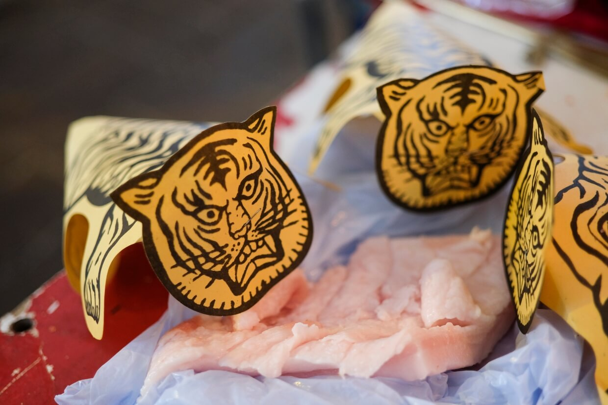
古時候的農夫，為了防止蛇蟲鼠蟻甦醒後會破壞農作物，就會拜祭白虎，因為白虎是獸王，能驅除百毒，免被害蟲入侵。
而「驚蟄日」在傳統習俗中亦為打小人的日子。小人是指那些喜歡挑撥離間，惹是生非的人，他們就像蛇蟲鼠蟻等害蟲一般討厭；而小人又象徵惡運黴運，諸事不順、處處受阻等意思，故此在傳統習俗上亦會在驚蟄這天「打小人」。
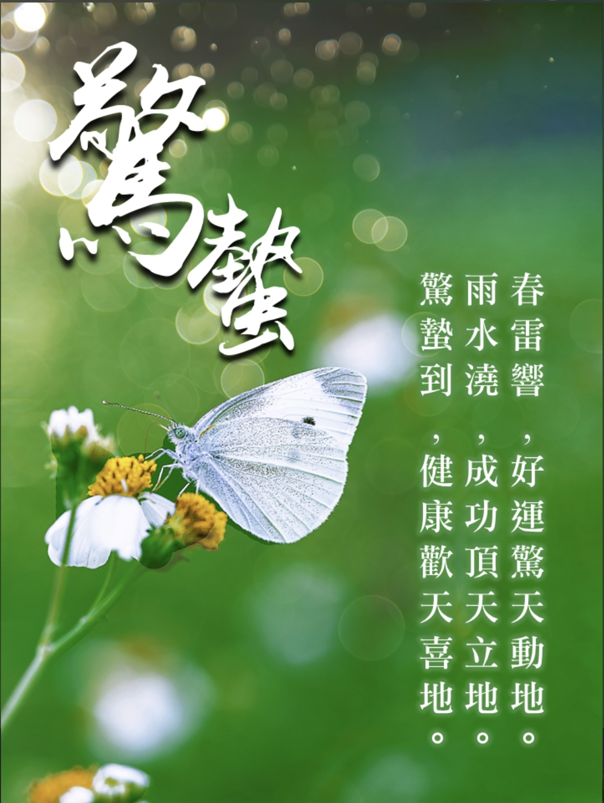
除了驚蟄日，其實全年都可以進行打小人儀式，尤其是農曆初一和十五，因為這兩天能量特別強，適合祈福和驅邪！如果近期覺得運勢不好、諸事不順、小人作祟，也可以選擇合適的日子進行儀式。但是，一定要記得避開與自己生肖相沖的日子，以免適得其反！
打小人儀式中的核心神明
打小人儀式並非單純的「發洩」行為，背後蘊含著深厚的民間信仰體系。儀式中涉及多位神明，其中最重要的兩位是白虎與打手婆婆（又稱「神婆」或「問米婆」）。
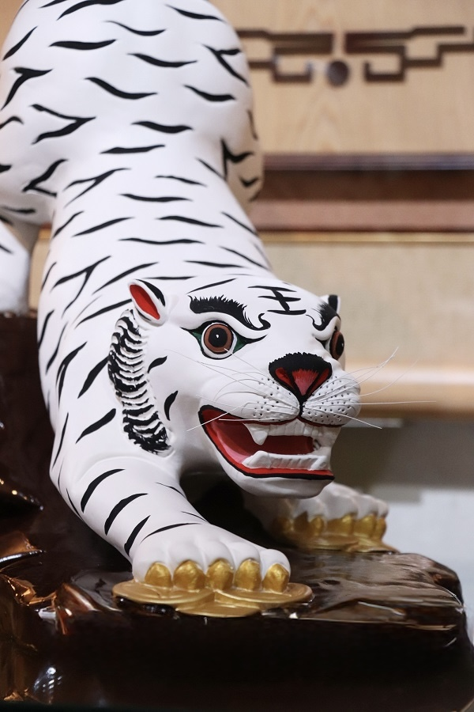
白虎
白虎是道教中的凶神之一，亦被視為獸中之王。在驚蟄當天，傳說白虎會出來覓食，因此人們會以豬肉或油豆腐祭拜白虎，稱為「祭白虎」或「餵白虎」。白虎能鎮壓百毒、驅除害蟲，儀式中在白虎面前打小人，象徵小人會被白虎制服，以後不能再興風作浪。
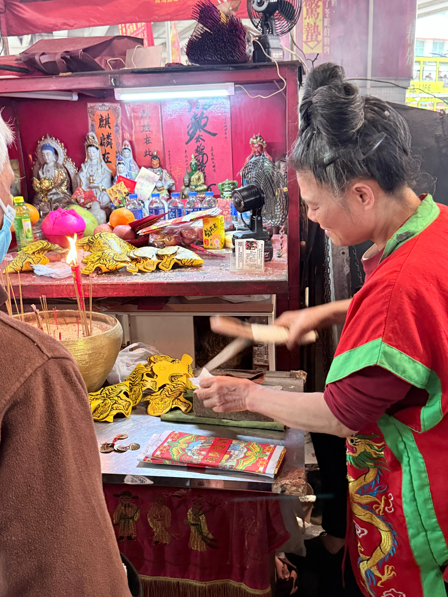
打手婆婆
「打手婆婆」是主持打小人儀式的關鍵人物，她們通常年長、經驗豐富，熟悉完整的儀式流程與口訣。打手婆婆不僅負責敲打紙人，更會誦唸咒語、焚香稟告神明，將當事人的冤屈傳達上天。她們被視為凡間與靈界之間的溝通橋樑，是儀式中不可或缺的靈魂人物。
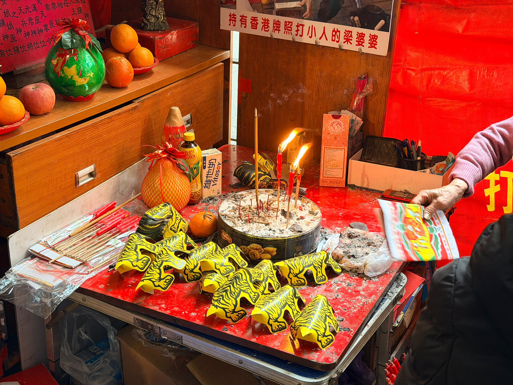
打小人的文化意義
打小人的文化意義，首先在於它是一種庶民的心理療癒機制。當人們遭遇職場陷害、感情背叛等不公，卻無力直接對抗時，透過拍打小人紙、誦唸咒語，能將抽象的憤怒與無助具體發洩出來，達到情緒疏導的效果。
社會安全閥
其次，它扮演著「社會安全閥」的角色——與其讓怨氣累積到爆發真實衝突，不如透過儀式化解仇恨，間接維持社區和諧。
再者，這項習俗連結驚蟄節氣與祭白虎傳統，把干擾是非者比喻為春日甦醒的害蟲，體現華人順應天時、趨吉避凶的宇宙觀。
儀式結尾往往轉向祈福，暗含「懲惡即是揚善」的倫理信念，讓當事人得以清掃負能量、重新出發。正因如此，打小人雖帶巫術色彩，卻被列入香港非物質文化遺產，成為集體認同的象徵。
打小人指南
從準備材料到完成儀式的完整教學
如果您是去專業的打小人攤位，例如灣仔鵝頸橋，師傅通常會準備好一整套小人衣紙及相關物品，您不需要自行購買，只需提供姓名和出生日期即可。
五寶紙與儀式物品
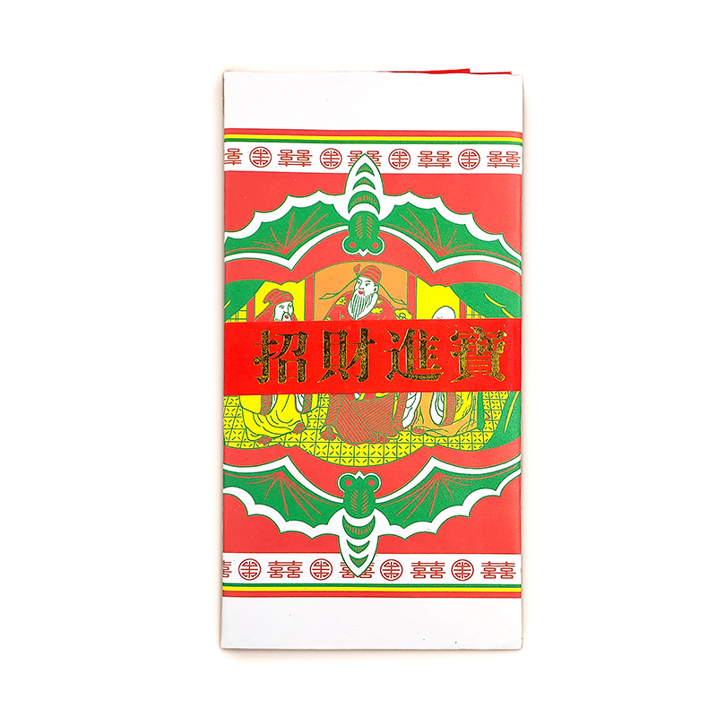
五寶紙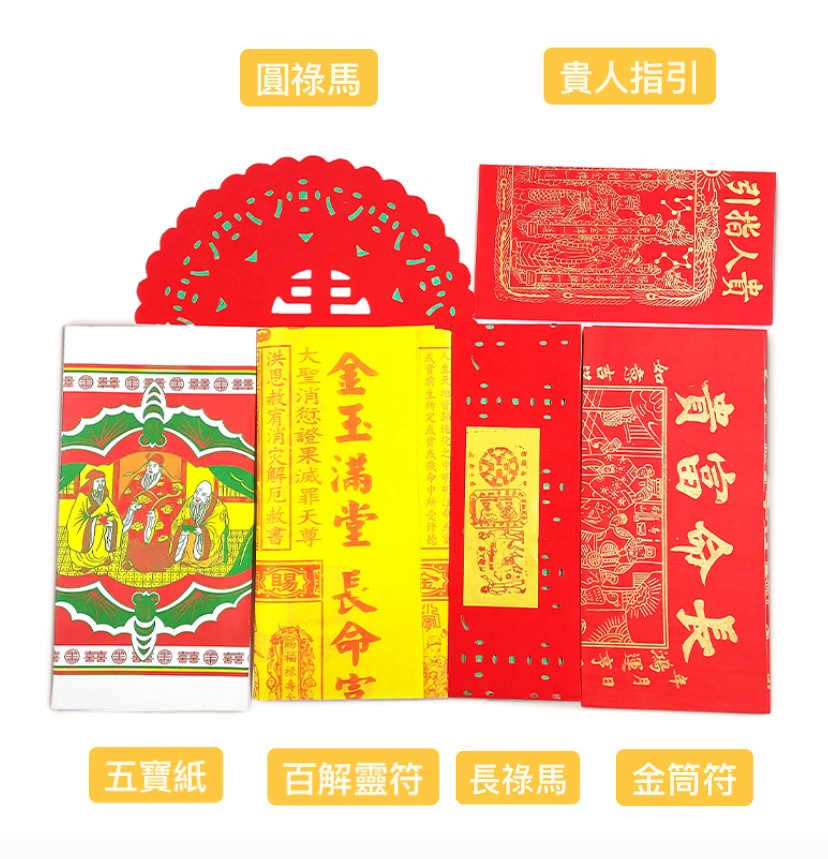
五寶紙內含物五寶紙
一套完整的祈福紙品，內含一男一女小人紙、百解靈符、圓祿馬、長祿馬、貴人指引及三天賜福轉運降鴻寶牒。傳統上會在五寶紙上寫上委託人的姓名、出生年月日及出生地。
祭拜神靈，祈求消百災、解百厄。
寓意祈求貴人從四方八面源源不絕地到來扶持指引。
俗稱拖手貴人祿馬，寓意祈求眾多貴人接踵而至，手牽手環繞身邊給予助力。
內有貴人和合符，寓意祈求人緣良好，事業順利，財源廣進。
俗稱「金筒符」，用於祈求上天賜福、轉運增祥。
分為男小人紙（男人丁）和女小人紙（女人丁），用來代表要驅趕的對象。
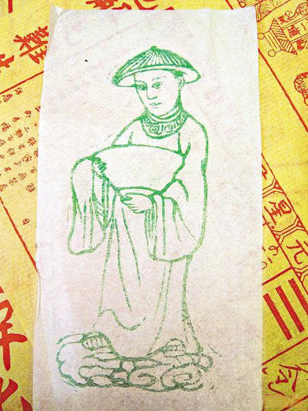
男人丁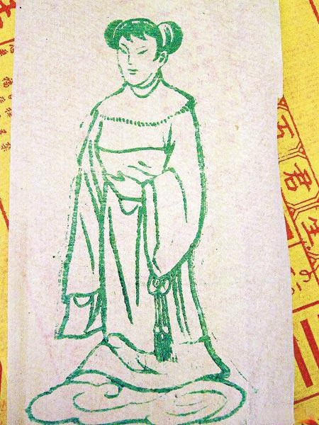
女人丁小人紙
分為男小人紙（男人丁）和女小人紙（女人丁），用來代表要驅趕的對象。
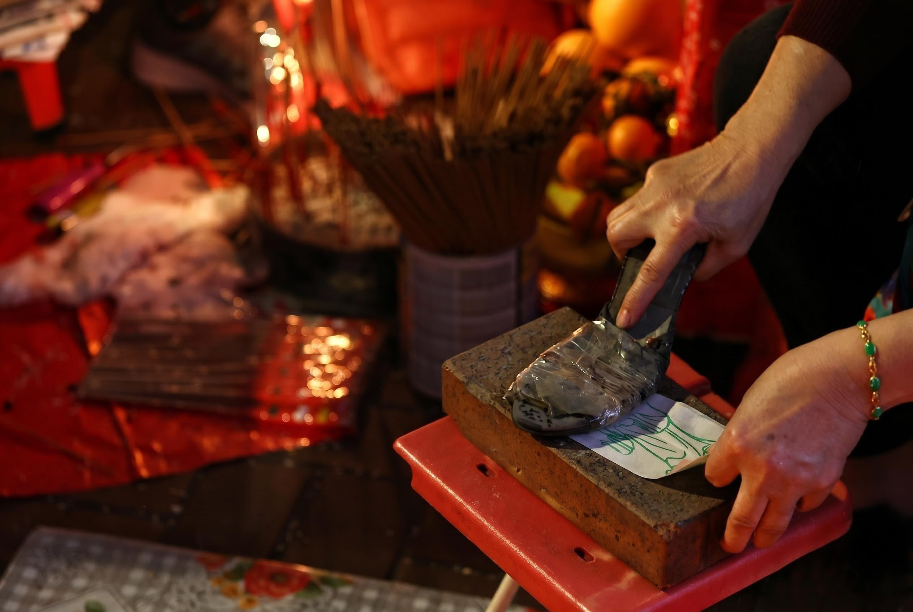
拖鞋或舊鞋
用來拍打小人紙的工具，象徵打到小人無路走。
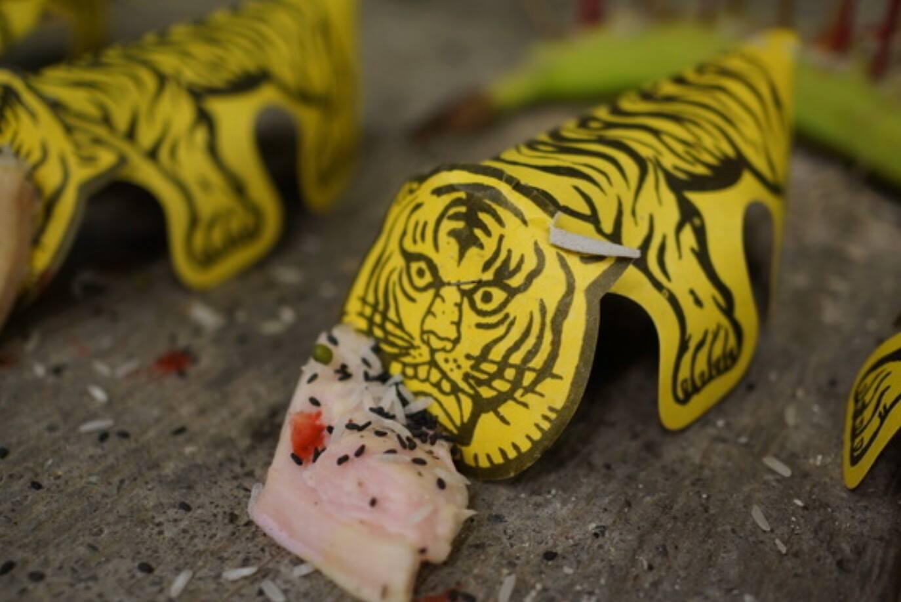
紙老虎
用於象徵白虎，一般為黃色黑斑紋，口角畫有一對獠牙，需用生豬肉祭拜以平息其戾氣。
生肥豬肉
抹在紙老虎的嘴部。其寓意有二：一是將老虎「餵飽」使其不再傷人；二是讓老虎嘴部沾滿油水，使其「油嘴滑舌」不再張口散布是非，封住小人之口。
根據影片內容的打小人步驟
寫名稟告
委託人在五寶紙上寫上自己的姓名、出生年月日、出生地。如有打小人對象就在男或女小人紙上寫小人名字。若無特定小人對象可以不用填寫，泛指打走委託人身邊的小人。
上香
委託人需要誠心向天地神明上香。
請神
拜神婆以三支清香、五寶紙、小人紙為委託人請神及化解是非小人。
打小人
拜神婆將小人紙放在磚頭上，一邊念咒、一邊用鞋拍打小人紙部位，直至小人紙破爛為止。
餵白虎
用紙老虎包起小人紙碎片，寓意白虎將小人叼走，不會再傷害貴人，再餵白虎吃肥豬肉，把紙老虎放在肥豬肉上下來回的抹數下，使其吃飽後不再出口傷人，再把白虎化掉。
化解
拜神婆用百解靈符為委託人掃身，象徵為其消除厄運，再撒芝麻、花生、豆子等象徵消災解厄。
祈福
以紅色的貴人紙，為委託者祈求貴人幫助。
進寶
之後把貴人紙、元寶一起燒掉，供奉鬼神。
擲筊
必須擲出聖筊（一正一反）才代表儀式成功。如果連續三次失敗，則需重新開始，便代表神明不同意或儀式過程有誤，需重新開始整個儀式。
打小人口訣
打小人口訣有不同長度、不同內容的版本，以下是三種常見版本：
打你個小人頭 打到你成世無出頭
打你個小人手 等你無鞋挽屐走
打你個小人眼 等你成世都撞板
打你個小人腳 打到你有鞋唔識着
打你個小人頭，等你有氣無埞抖
打你個小人面，等你成世都犯賤
打你個小人眼，等你考試零雞蛋
打你個小人耳，等你銀紙當草紙
打你個小人嘴，等你有女冇得追
打你個小人肚，等你日日比人告
打你個小人手，等你有錢唔識收
打你個小人腳，等你有鞋無得著
打你個小人頭，等你有氣冇埞唞，日日去撼頭。
打你個小人面，等你全家中非典，成世都犯賤。
打你個小人眼，等你成世都撞板，日日被人斬。
打你個小人耳，等你日日痾爛屎，抿屎用手指。
打你個小人鼻，等你索野無晒味，鼻涕流到地。
打你個小人口，等你講嘢有得唞，食飯都會嘔。
打你個小人頸，等你周身都有病，花柳兼淋病。
打你個小人胸，等你頭暈兼中風，後門被人通。
打你個小人手，等你有錢唔識收，有樓變喳兜。
打你個小人腳，等你日日敷中藥，有鞋冇腳著。
打你個小人肚，等你惡運行到老，日日被人告。
注意事項與禁忌
進行打小人儀式時，必須謹記以下禁忌，以免弄巧成拙，反而讓霉運纏身！
最佳時間為白天
午時（早上11點至中午1點）陽氣最旺盛，最適合打小人。夜間陰氣較重，容易招惹不好，要避免進行儀式。
孕婦與病人不宜
孕婦及體弱者氣場較弱，不宜參與；亦不可將孕婦當作小人攻擊，以免帶來反效果。
切勿指名道姓
千萬不要指名道姓，亂寫可能招來業障，傷人也傷己，只需寫「小人」或「是非精」等！
小人衣紙須焚化乾淨
打小人後，所有使用過的小人紙、圖鑑需焚燒，完全消除負能量。
鞋子應直接丟棄
用來打小人的鞋應丟棄，切勿帶回家中，避免將霉運帶回家。
不能過度頻繁
適量打小人可驅散負能量，但過度進行反而會影響到自己的運勢！適量進行，勿過度迷信！
打小人會反噬？
很多人擔心打小人會帶來反噬效果，甚至影響自身運勢。其實打小人的核心意義是「驅邪避害」，並非「詛咒報復」，關鍵在於心態和方式。
只要不帶著強烈怨念、不針對特定對象，而是將其視為象徵性儀式清除負能量、調整自己的氣場，就不會影響自己的運勢。另外，抱持正向心態參與打小人儀式，更有助於強化自身能量場，帶來心理上的安定和自信，才能真正提升運氣，趨吉避凶！
實用資訊指南
營業時間
每日 09:00 - 18:00
地址
灣仔鵝頸堅拿道東1號（堅拿道西與軒尼詩道交界的堅拿道天橋橋底）
交通方式
港鐵銅鑼灣站 A 出口，沿羅素街向鵝頸橋方向步行約 5 分鐘即可抵達。
最佳時機
驚蟄（農曆二月初三前後）
2026年為西曆3月5日（農曆正月十七）
驚蟄當天是「打小人」的最高峰期，多數攤檔會延長服務時間，部分拜神婆更會提供 24 小時全天候服務。
溫馨提示
驚蟄當天人潮極其擁擠，從清晨起便會湧現排隊人龍，現場等候時間可能長達 2 至 3 小時，建議有意前往的市民務必預留充足時間並提早排隊。
服務收費
基本服務
每次費用劃一約為 港幣 50 元。
升級加購服務
若需針對個人需求進行加強，如祈求事業順利、轉運添貴人或特別開光符紙，部分攤檔提供加購服務。費用約為 港幣 80 至 150 元不等，視乎儀式規模及祭品內容而定。
最終費用視乎儀式規模及祭品內容而定，建議開始前先與攤檔確認。
推薦地點
親身體驗打小人的最佳去處
根據民間風俗，打小人極為講究「陰陽氣場」。儀式通常選在陰氣稍重、煞氣流通的地點，如陰暗處、三叉路口或橋底，利用氣流交匯之勢化解煞氣。此外，馬路邊緣、山腳或鄰近廟宇的橋邊也是理想之選，象徵將霉運打走並徹底沖散，達到化煞祈福的效果。


灣仔鵝頸橋
堅拿道天橋底香港最著名的打小人聖地，由於天橋底恰好面對三岔路口，地理上處於極佳的「三煞位」，民間認為此處煞氣重、化煞效果最為靈驗。這裡常年煙火繚繞，多位資深的職業拜神婆在此駐守，為市民及遊客驅除是非。
交通方式
港鐵銅鑼灣站A出口，沿羅素街向鵝頸橋方向步行約5分鐘即可抵達。


紅磡福德古廟
寶來街廟宇位於紅磡寶來街與船澳街交界，同樣屬三叉路口，是另一處進行打小人儀式的傳統地點。
交通方式
可乘坐港鐵至紅磡站或黃埔站，再步行前往寶來街與船澳街交界。
體驗線上打小人
選師傅、貼符開打，指尖驅邪轉好運
恭請師傅
選擇一位師傅為你主持打小人儀式
鵝頸橋資深神婆
數十年經驗，口訣純正，儀式地道。適合追求傳統氛圍的信眾。
數碼神婆
傳承古法再創新，以數碼能量驅邪轉運。儀式型格、節奏感強，深受潮人信眾追捧。
標記小人
輸入你要打的小人，讓師傅為你驅邪
驅邪打小人
點擊拖鞋，奮力一擊！打到佢斷氣！
小人已退散！
打小人迷思
「專業打手」破解各種打小人迷思
三大常見迷思
聽聽專業打手怎麼說
迷思一：打小人真的會傷害到別人嗎？
有的打四方，有的打指定的人，還有的打小三，如果是打指定的人，那也算是吧，其實就是想趕走那些小人，讓自己心裡安心，不想再忍耐了。
迷思二：打小人工作只能女性從事？
以前是女人一直做這行，幫人消災、打走小人。後來男女都可以做啦，就像廟里有男和尚也有女和尚一樣，我們家族里男女都能從事，沒有男人從事這行是不吉利的說法。
迷思三：打小人是折福的行為嗎？
不認同哦，這就是幫人趕走身邊的小人而已。
真實聲音
來自現場的第一手分享
採訪打手婆婆
資深神婆分享多年打小人心得與見聞
採訪現場遊客
親身體驗者的真實感受
關於我們
「正」小人的成立初衷
成立目的
「正」小人成立於 2026 年，旨在以創新數碼方式傳承與推廣香港獨特的「打小人」民間文化。我們深信這項被列入香港非物質文化遺產的傳統習俗，不僅是庶民的心理療癒機制，更蘊含著深厚的歷史底蘊與民間智慧。
透過建立線上體驗平台、整理儀式知識與文化脈絡，我們希望讓更多人——尤其是年輕一代——認識這項地道文化，讓傳統在現代社會中煥發新的生命力，同時為海內外遊客提供一扇了解香港民間信仰的窗口。